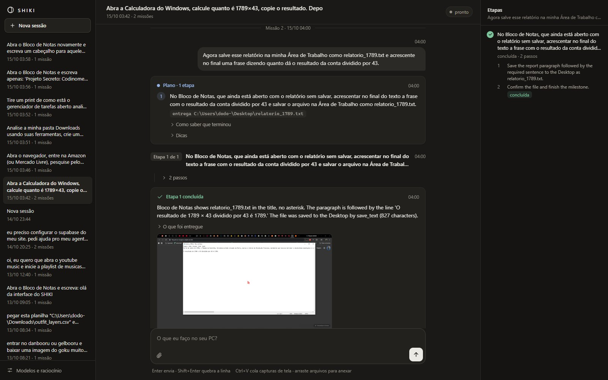
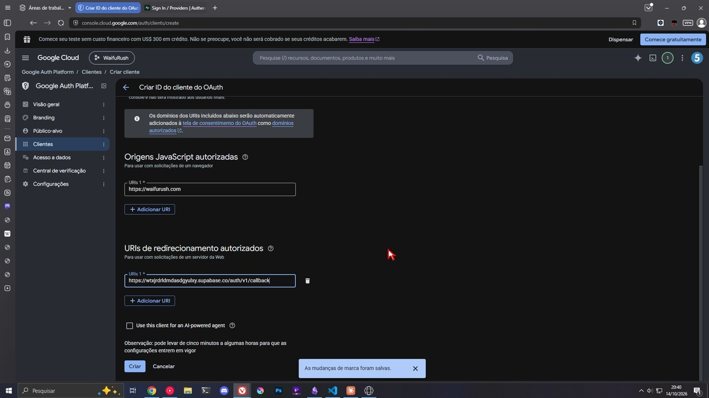
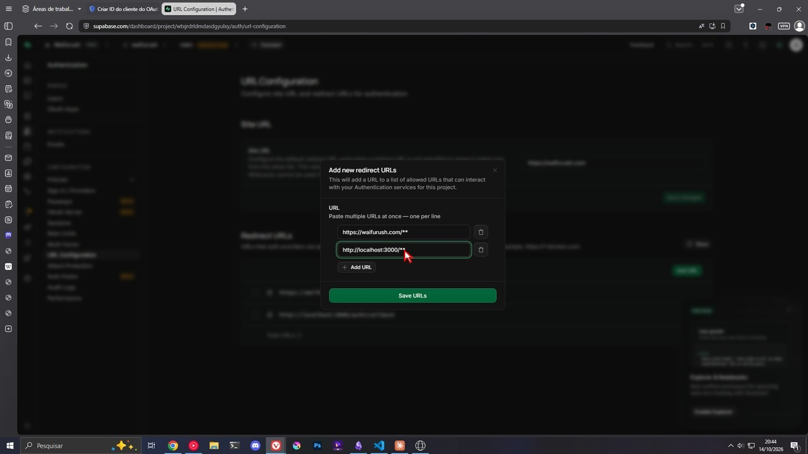
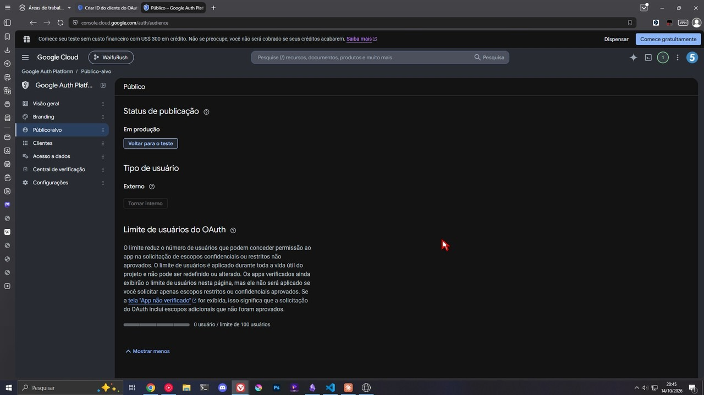
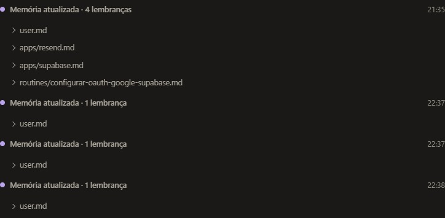

agente de computador para Windows
Você pede. Ele usa o seu PC.
Lê a tela, mexe o mouse e o teclado, divide o pedido em etapas, aprende com cada missão e para antes de pagar.
como funciona

caso real · 14/10
o pedido“eu preciso configurar o supabase do meu site…”, junto com as instruções que outro agente tinha passado



caso real · o resultado
e depoisNa mesma conversa, abriu uma janela anônima, entrou no site com “Continuar com Google” e confirmou que o login funciona.
o que ele pode fazer
memória

limites